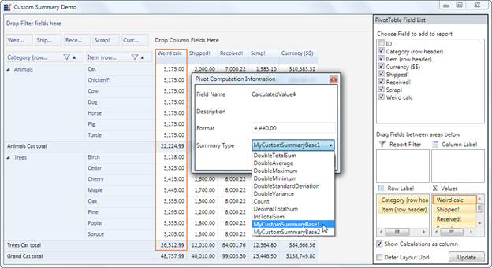

This feature enables the user to set the custom summaries to the pivot item at both load time and runtime (using PivotComputationInfo dialog).
Use Case Scenarios
The user can set different custom summary types at runtime.
The following screenshot shows the custom summary at runtime:

Figure 32 Setting Custom Summary at Runtime
Property
Table 6: Property Table
|
Property |
Description |
Type |
Data Type |
Reference links |
|
CustomSummaryBaseCollection |
Gets/Sets the Custom SummaryBase collection to set via PivotComputationInfo Dialog at runtime |
CLR |
ObservableCollection of type SummaryBase |
- |
Sample Link
The user can find a sample in the following location:
{InstalledLoction}:\Users\{User}AppData\Local\Syncfusion\EssentialStudio\{InstalledVersion}\BI\WPF\PivotAnalysis.WPF\Samples\Summaries\CustomSummariesDemo
Adding Runtime Custom Summary Type setting to an Application
To add the feature to an application:
1. Create a Custom SummaryBase class using the abstract class SummaryBase.
2. Implement your summary logics by overriding Combine(), CombineSummary(),GetResult() methods.
3. Create an object for the Custom Summary.
4. Set the created object to PivotSchemaDesigner object’s CustomSummaryBaseCollection property.
Hence this property is an ObservableCollection type of SummaryBase that enable the user to add more than one class object. Each object is considered as a unique Custom SummaryBase.
5. Using the CustomSummaryBaseCollection, set the summary for the respective columns by its Summary property.
Notes: Ensure to set the SummaryType as Custom, otherwise the default type Count will be assigned.
To set Custom Summary at runtime:
1. Double click Items from the PivotSchemaDesigner which will pop up the Pivot Computation Information dialog box.
2. In the Summary Type combo box, you can select the Custom summaries.
The following code snippets, explains the implementation of adding Runtime Custom Summary Type settings feature:
|
[C#]
/// Adding Custom SummaryBases to the CustomSummaryBaseCollection property this .Designer.CustomSummaryBaseCollection = new System.Collections.ObjectModel.ObservableCollection<SummaryBase> { new CustomSummaries.MyCustomSummaryBase1(), new CustomSummaries.MyCustomSummaryBase2() };
/// Setting the summary to the Pivot item using the same collection CalcColumn.Summary = this.Designer.CustomSummaryBaseCollection[0];
/// Setting the Summary type to Custom CalcColumn.SummaryType = SummaryType.Custom;
|
|
[VB] ' Adding Custom SummaryBases to the CustomSummaryBaseCollection property Me .Designer.CustomSummaryBaseCollection = New System.Collections.ObjectModel.ObservableCollection(Of SummaryBase) From {New CustomSummaries.MyCustomSummaryBase1(), New CustomSummaries.MyCustomSummaryBase2()}
' Setting the summary to the Pivot item using the same collection CalcColumn.Summary = Me.Designer.CustomSummaryBaseCollection(0)
' Setting the Summary type to Custom CalcColumn.SummaryType = SummaryType.Custom
|